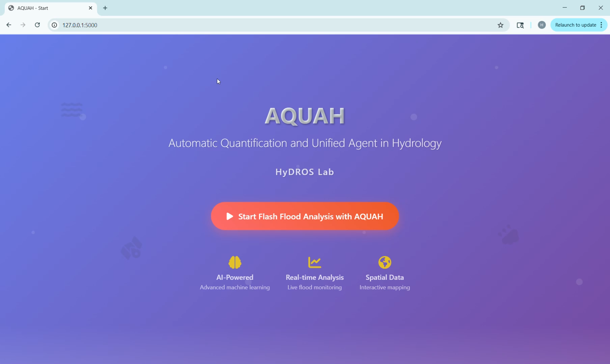
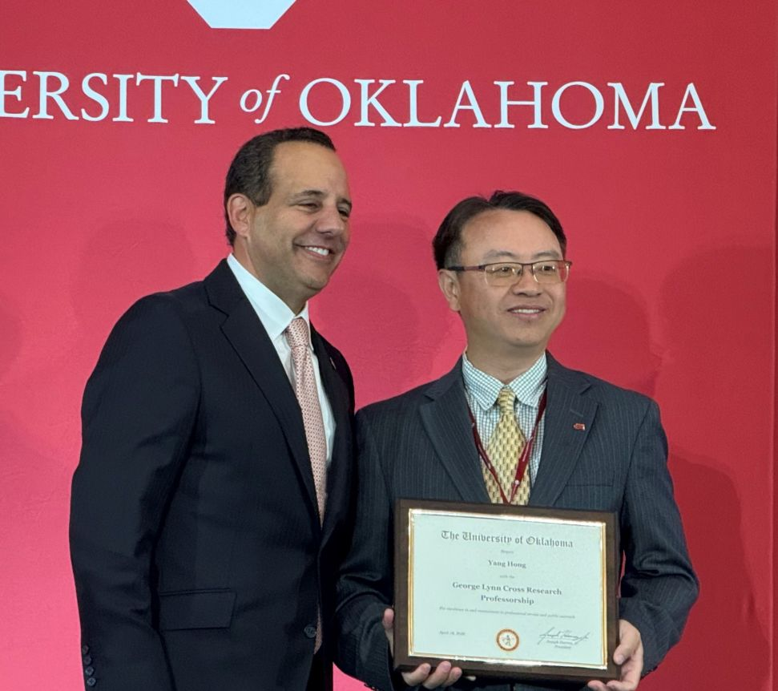
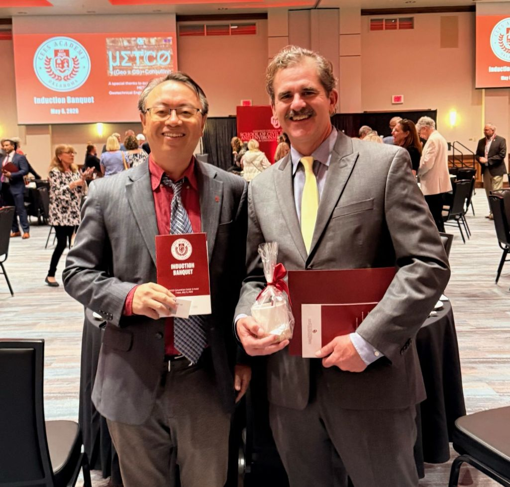
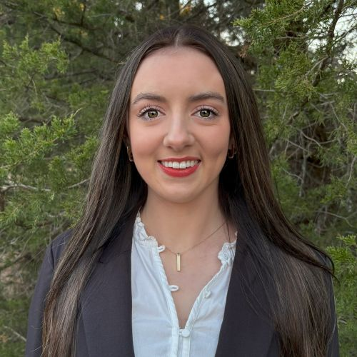
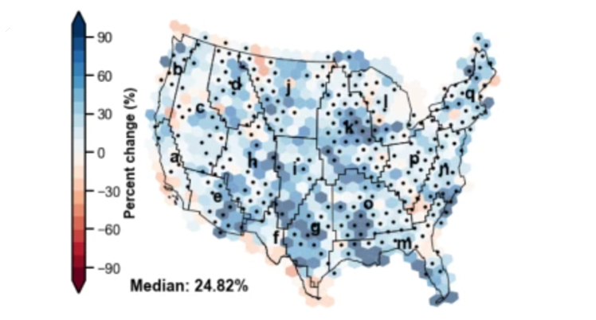

Texas Hill Country Flood
Displacement‑corrected rainfall improved peak timing by 6–8 hours and RMSE by 23% across 4 gauges.
A live, in‑browser CREST simulation is on the way — run the model, explore floods and droughts, and see results in real time.
An interactive history: model structure, milestones, global reach, and the model family tree. Auto‑plays — use the arrows to navigate.
From real‑time warnings to long‑term planning, HydroSky adapts to your data and decisions.
High‑resolution rainfall ingestion (MRMS/HRRR), hydrologic routing with CREST/EF5, probabilistic peaks, and push alerts with explainable drivers.
Soil‑moisture deficits, runoff efficiency, and snowmelt diagnostics for seasonal allocation, resilience, and supply risk planning.
What‑if storm tracks, displacement correction, reservoir rules, and land‑use change—compare impacts in minutes, not weeks.
Map tiles, time‑series, exceedance curves, and API endpoints for enterprise integration.
Two decades of CREST development — a remote‑sensing–native distributed hydrology stack, now with an AI agent.
Coupled runoff generation — a variable infiltration curve over three soil layers — with cell‑to‑cell flow routing on a grid. Two forcings (precipitation, PET), 17 parameters, 9 outputs; runs at global, regional, or basin scale.
EF5 / FLASH ensemble flash‑flood forecasting, operational at NOAA/NSSL; iCRESLIDE cascading flood–landslide prediction; and CREST‑iMAP, a fully coupled 2‑D hydrologic–hydraulic model for flood inundation mapping (e.g. Hurricane Harvey).
CREST‑VEC vector routing with a lake module for continental‑to‑global runs; a groundwater module (v3.0, CONUS‑wide calibration); and WRF atmosphere coupling toward seamless sensor‑to‑streamflow prediction.
An LLM agent that operates and auto‑calibrates CREST from plain‑language prompts — automating model setup, calibration, and analysis across versions (AQUAH; Yan et al., 2025).
Illustrative results. Replace with your own projects and images when ready.
Displacement‑corrected rainfall improved peak timing by 6–8 hours and RMSE by 23% across 4 gauges.
Combined snowmelt diagnostics and runoff thresholds to quantify reservoir drawdown risks under El Niño.
HUC8 contribution tree reveals upstream drivers of compound events and flash‑to‑flood transition windows.
Highlights from the HyDROS Lab. See all news ↗






Questions about CREST, collaborations, training, or early access to the demo? Get in touch.
This site is static — use the email link below or connect a form service later.